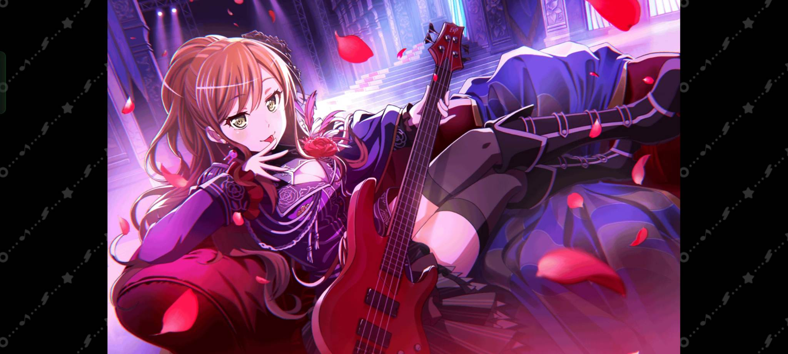

w roseli każdy członek jest elementem niezbędnym do osiągnięcia najwyższej wspaniałości, czemu Lisa jest niezbędna? Bardzo ważnym czynnikiem mówiącym o niezbędności Lisy jest to że to ona przekonała początkowo nie tak wspaniałą Yukinę żeby dała Ako szansę pokazać swoją wybitność i przyłączyć się do roseli. Ważne jest także to jak dzięki swojej troskliwości nawet pomimo tego że jest najmniej utalentowana muzycznie(jest dalej świetna, po prostu roselia pełna jest przepotężnych geniuszy) wspiera innych członków roseli. W dużej mierze dzięki niej roselia nie stała się zimnym zespołem nastawionym tylko na perfekcje, a posiada rodzinną atmosferę. To wszystko pozwala stać się Lisie najlepszą basistką świata i okolic. Zainstaluj grę!
